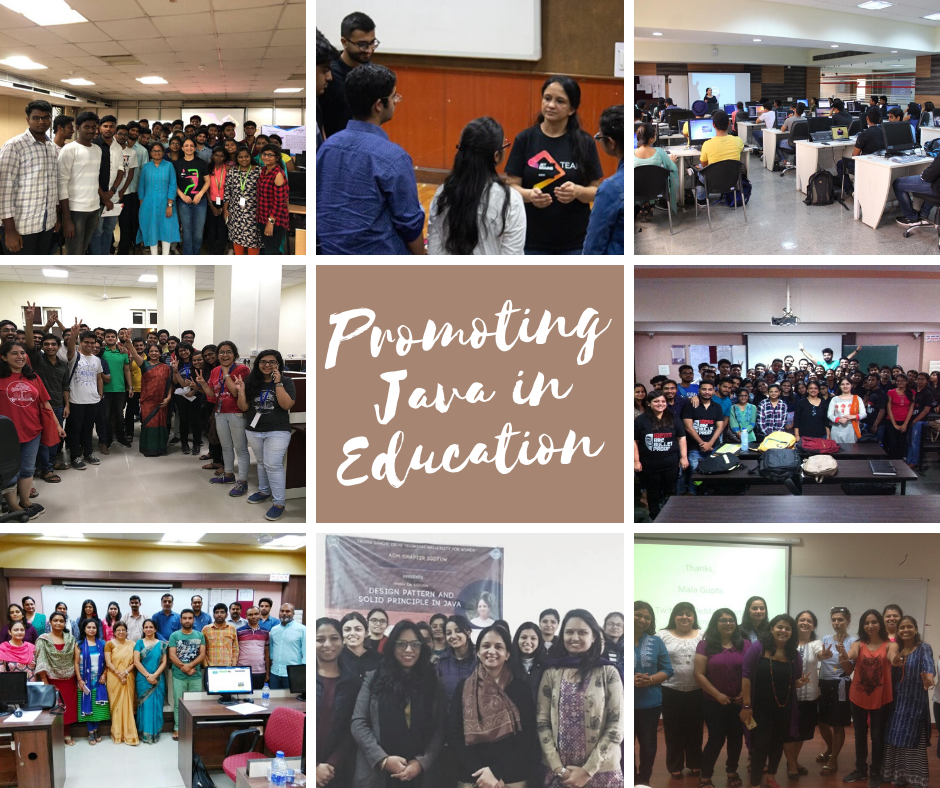

My first encounter with the gap in academia and tech industry was back in 1998, when I was expected to clear screening on technologies like Oracle D2K, Reports, etc. for my first job while what university covered as curriculum was fundamentals of Computer sciences and related subjects.
And as I progressed in my career, the gap continued to widen with technologies and programming skills evolving at breakneck speed, and academia failed to keep up despite all the good intentions to not let this gap set-in.
Training institutes, one of which I also joined in late 90s hoping it will be my gateway to my next big-job and paycheck was a total disappointment. This is when I got an opportunity to work on a project with a Swiss startup in 2001 where I was entrusted to build a product in Java and learn Java on-the-job. This changed my perspective and I was motivated to explore alternate methodologies of learning.
Exploring methodologies beyond the classroom - whether university or training shops - I experimented with on-the-job-training, self-learning through open content, community assisted learning through knowledge sharing, participating in tech events and contributing to open source.
These alternate learning journeys not only enriched my skills but also made me confident to pick up projects and assignments, I still did not have any evidence with which I could convince a prospective employer. Recruiters always appeared skeptical of how much I know. At this time, my curiosity led me to certifications.
Writing the Sun Certified Java Programmer exam (now Oracle Java Programmer Certifications) was a game changer for me. It created a rock-solid Java foundation for me. After writing this exam, I was able to ace any technical interview or written exam on Java, was happier and more confident in coding in Java. I also wrote the SCWCD exam later (Sun Certified Web Component Developer). I still use the concepts I learned from it.
I wrote the books on Java Programmer Certification to ease the process of preparing for these exams. I believed if these exams are important, the journey to them should be easy to pursue. I use a lot of images, analogies, and interesting coding exercises in my books, so that the journey to preparing for these exams is easy and sustainable. These also help to retain the relevant information when one writes these exams.
A lot of students have connected with me sharing that they wrote these exams as undergraduates. They have been ecstatic in sharing that due to the strong technical foundation in Java formed due to these certifications, they have been more confident in their interviews, aced their discussions on Java, have been able to negotiate better remunerations and were able to work on some cool Java projects.
I have been fortunate and grateful that I have been able to promote Java in universities by visiting colleges as a guest lecturer for students and at Faculty Development Programs. Since I was aware of the latest development in the Java programming language, I delivered sessions on the latest changes in the Java language, changing programming paradigm in Java, solving real world problems using Java, How to write books and others to leading colleges in India like IIT Delhi, IIIT Delhi, NSIT Delhi, NIT Trichy, IGDTUW Delhi, Bharati Vidyapeeth College of Engineering, K R Mangalam University and others. I also judged a couple of hackathons at these universities.
